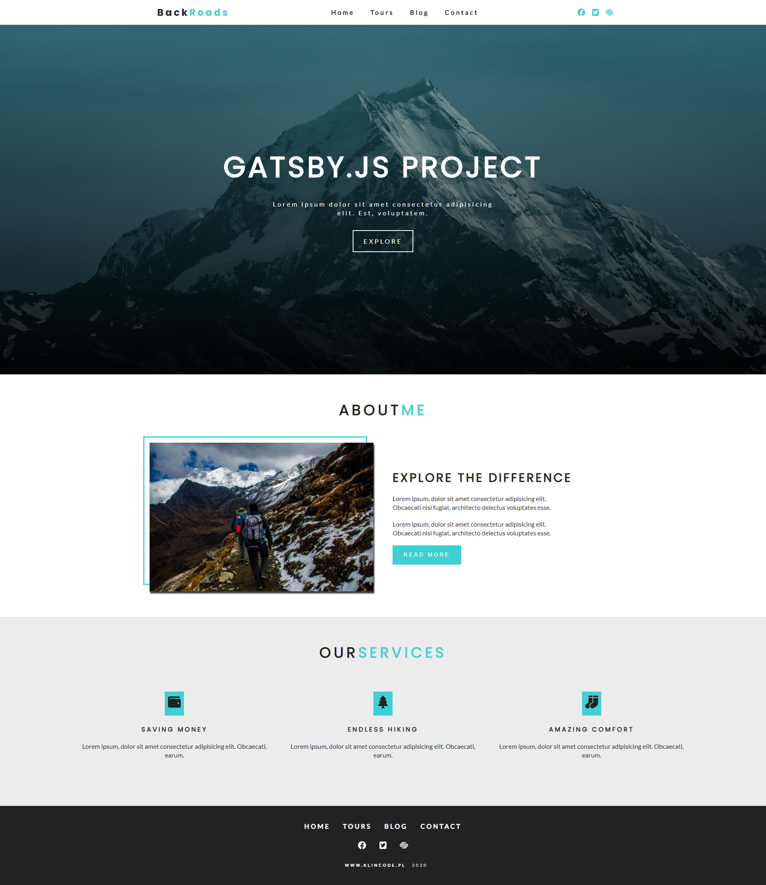
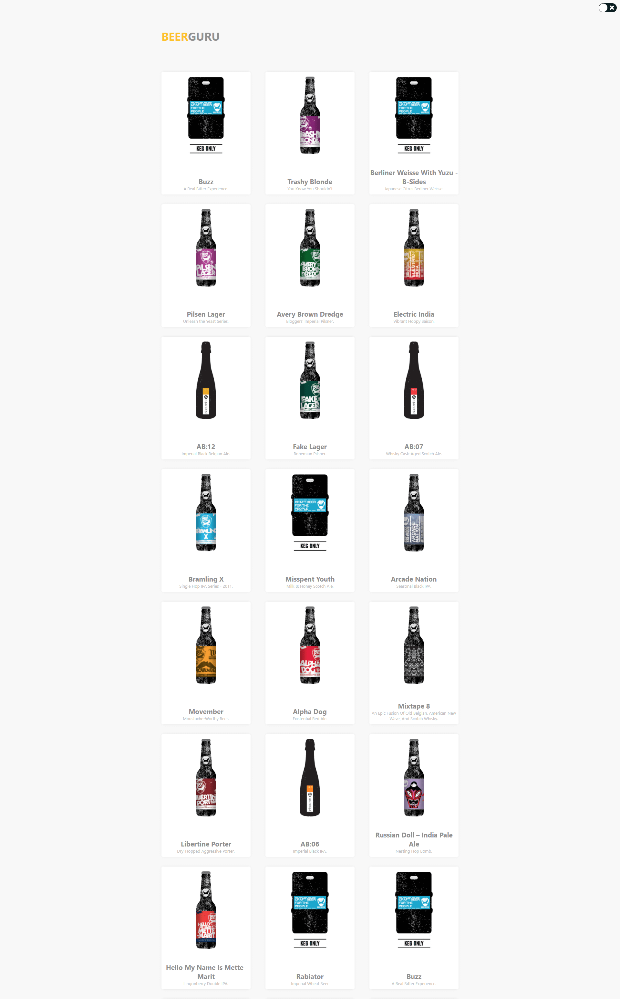
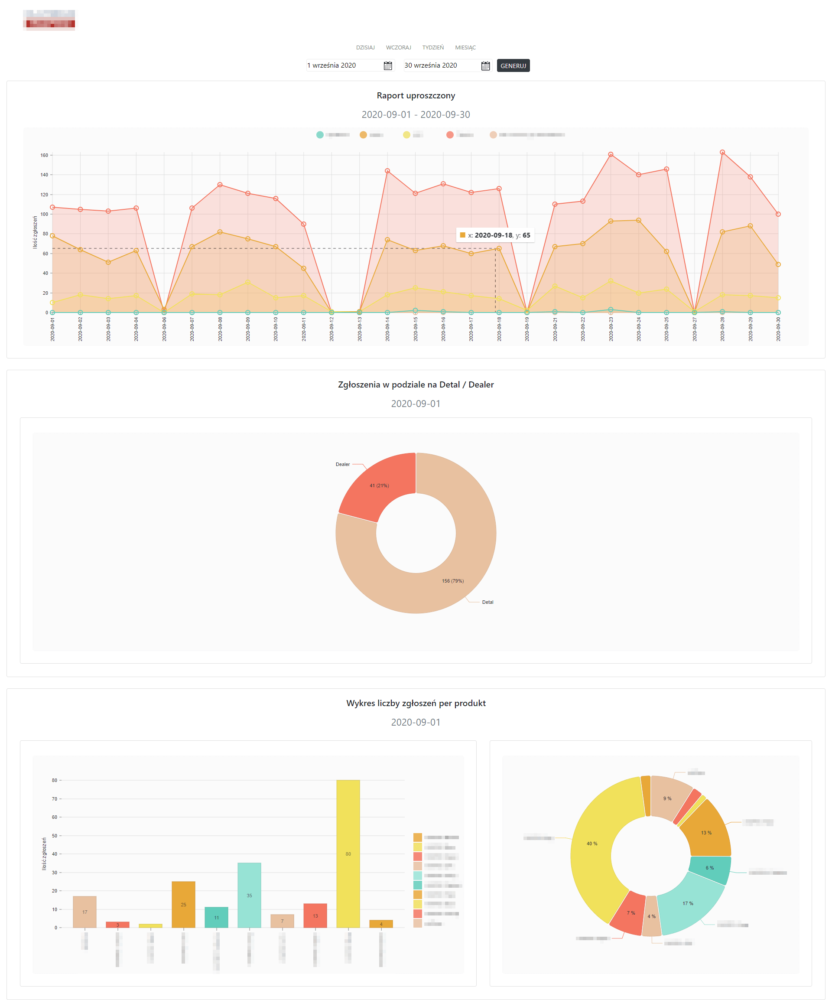
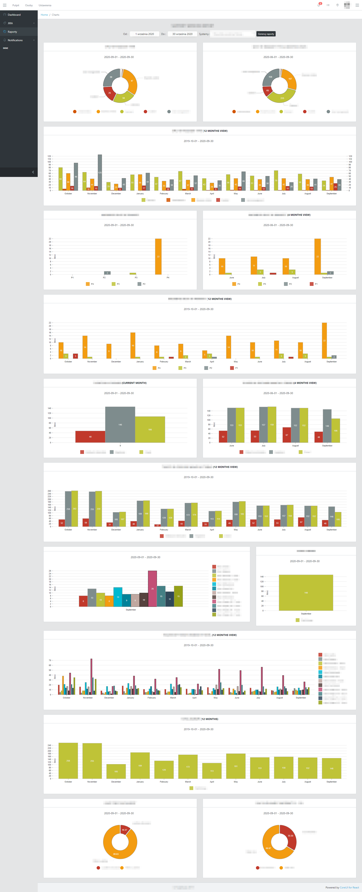

Gatsby JS
Projekt napisany w ramach realizacji kursu Udemy, utworzony przy użyciu frameworka Gatsby.js.
- React JS
- Gatsby JS
- CSS3


Landing Page – Bootstrap
Prosta strona typu landing page utworzona przy użyciu frameworka Bootstrap.
- HTML5
- CSS3
- Java Script
- Bootstrap

Projekt SPA
Strona typu landing page, zbudowana na podstawie przesłanego pliku graficznego PSD.
- HTML5
- CSS3
- Java Script
- SCSS

Beer API
Projekt napisany w React JS z wykorzystaniem StyledComponents - prezentuje/porównuje rodzaje piw. Pobieranie nowych elementów zależne od pozycji scrolla (infinite scroll)
- React JS
- Styled Components
- API

Projekt intranetowy - raporty
Projekt wewnętrzny, prezentujący dane w czytelnej formie. Napisany w React JS przy wykorzystaniu biblioteki NIVO. Zarządzanie stanem - Redux.
- React JS / Redux
- Styled Components
- Biblioteka NIVO

Projekt intranetowy - statystyki
Projekt wewnętrzny, napisany w React JS przy wykorzystaniu biblioteki NIVO. Zarządzanie stanem - Redux.
- React JS / Redux
- Styled Components
- Biblioteka NIVO